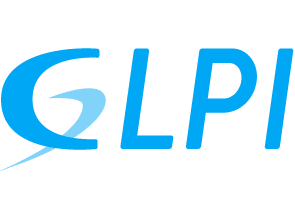
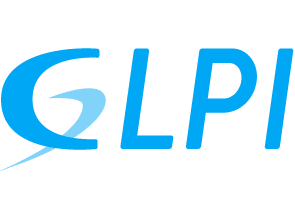

Slack
Slack es una plataforma de mensajería empresarial que mejora la comunicación en equipos de trabajo IT.
Conoce Slack desde ceroGLPI
GLPI es una herramienta de código abierto para la gestión de servicios de TI (ITSM) y activos.
Conoce GLPI desde ceroMantisHub
MantisHub es un sistema de seguimiento de errores (bug tracker) basado en la nube para equipos de desarrollo.
Conoce MantisHUB desde ceroMaterial Complementario
Puedes descargar el PDF con el material utilizado durante la presentación.
Descarga el material que usamos en la presentaciónEquipo A
- Cafferata Gabriela
- Canda Marcela
- Raso Lauraro
- Rios Emmanuel
ISFT 179 - Análisis de Sistemas